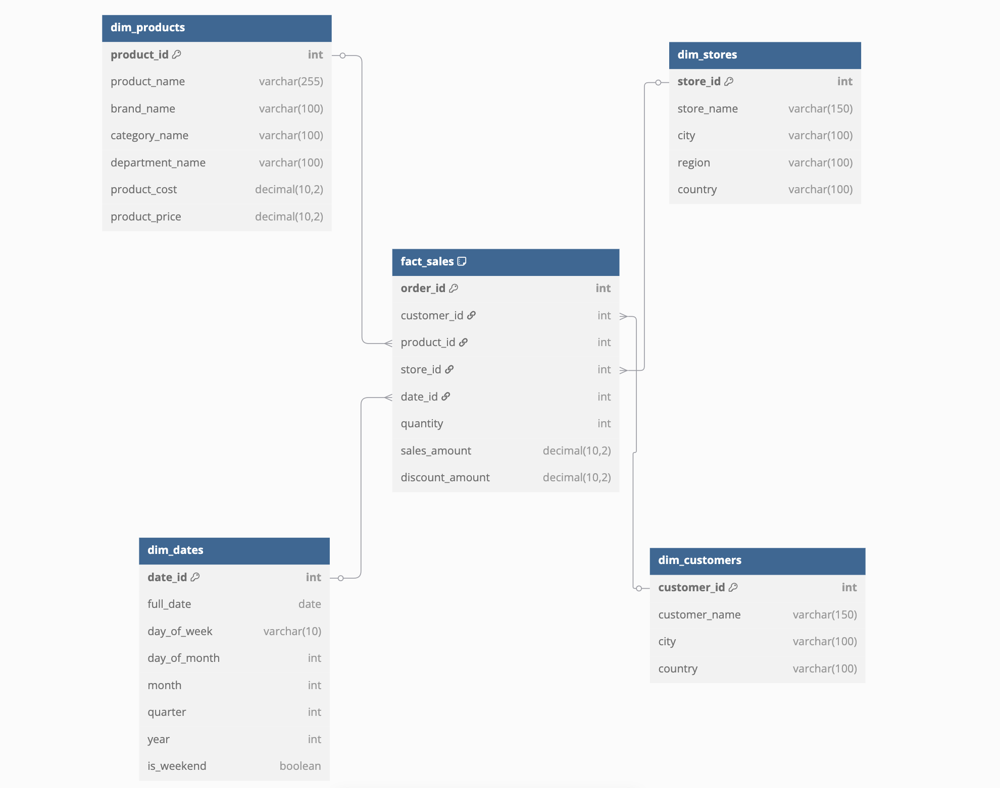
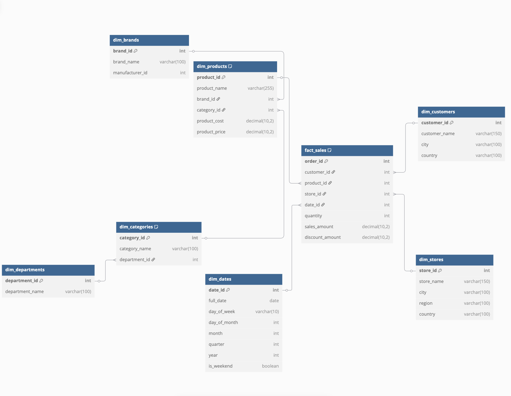

Introduction
Data warehousing designs typically follow one of two popular schema patterns: star schema or snowflake schema. Both are dimensional modeling techniques used to organize data for analytics, but they differ in their approach to normalization. Let’s explore these concepts and see how they apply to modern analytics tools like dbt.
This guide is designed for data engineers and analytics engineers familiar with basic dbt usage, looking to understand practical schema modeling decisions in their analytics workflows.
Database Normalization vs. Denormalization
Before diving into these schemas, let’s understand the core concepts behind them.
Normalization is the process of organizing data to reduce redundancy by dividing large tables into smaller, related ones. This approach:
- Minimizes data duplication
- Ensures data integrity
- Makes updates more efficient (change data in only one place)
- Saves storage space
Denormalization is the opposite approach, deliberately introducing redundancy to optimize for read performance. This approach:
- Reduces the need for complex joins
- Speeds up query performance
- Simplifies query writing
- Optimizes for analytics workloads
Example of a Denormalized Table:
| customer_id | customer_name | city | country |
|---|---|---|---|
| 1 | Alice | Paris | France |
| 2 | Bob | Paris | France |
| 3 | Charlie | London | UK |
But suppose Paris changes its spelling (unlikely but imagine “Paris” becomes “París”). In the denormalized version, every customer row with Paris must be updated.
This increases the cost of updates (slow, error-prone) and risks inconsistencies (some rows updated, some not).
Normalization avoids this because the city name is stored once.
The Birth of Star Schema
Star schema emerged naturally from the need to optimize databases for analytical queries rather than transactional processing. In traditional OLTP (Online Transaction Processing) systems, normalization rules the day to ensure data integrity during frequent updates. However, data warehouses primarily serve read-heavy analytical workloads where query performance is prioritized over update efficiency.
A star schema consists of:
- A central fact table containing business measurements/metrics
- Multiple dimension tables surrounding the fact table like points of a star
- Simple keys connecting dimensions to facts
The Update Challenge in Star Schema
The denormalized nature of star schemas creates specific challenges when updates are needed:
- Update Propagation: When dimension data changes, multiple records may need updating due to redundancy. For example, if a product category name changes, this update must be applied to all records containing that category.
- Update Cost: The computational and time cost of updating denormalized data can be significant in large data warehouses.
- Data Consistency: Partial updates can lead to inconsistent reporting if not properly managed.
- Historical Tracking: Many star schemas use slowly changing dimensions (SCDs) to track historical changes, adding complexity.
However, these update challenges are generally accepted because data warehouses typically:
- Have scheduled batch updates rather than real-time changes
- Prioritize read performance over write performance
- Can rebuild dimensions from source systems when needed
Snowflake Schema: Taking Normalization Further
The snowflake schema evolved as an extension of the star schema, introducing normalization to the dimension tables. Instead of having completely denormalized dimension tables, snowflake schemas break dimensions into multiple related tables.
In a snowflake schema:
- The central fact table remains the same as in a star schema
- Dimension tables are normalized into multiple related dimension tables
- The resulting diagram resembles a snowflake with branching dimension tables
Advantages of Snowflake Schema:
- Reduced storage space through minimized redundancy
- Better data integrity due to normalization
- More efficient updates since data exists in one place
- Clearer representation of hierarchical relationships
Disadvantages of Snowflake Schema:
- More complex queries requiring additional joins
- Potentially slower query performance
- More difficult for business users to understand
- More complex ETL processes
Visualizing Star vs. Snowflake
This is an example of a star schema:

As you can see the fact_sales table is directly connected to dimensions tables.
Here is an example of a snowflake schema and as you can see there are more models, which increases complexity (as more joins are required to retrieve all the information that you would need)

The fact_sales is connected to dimensions tables that are themselves connected to other dimensions tables.
Performance Considerations at Scale
The performance impact of each schema design varies based on several factors:
Query Pattern Impact
Star Schema:
- Excels at commonly used aggregation queries (e.g., “total sales by region”)
- Performs well with pre-defined dashboard queries
- Supports efficient slice-and-dice analytics with minimal joins
Snowflake Schema:
- Better suits queries that only need specific normalized dimension attributes
- May perform poorly on broad analytical queries requiring multiple dimension hops
- Requires more complex query optimization by the database engine
Data Volume Scaling
As data volumes grow into terabytes and beyond:
Star Schema:
- Maintains relatively consistent query performance as fact tables grow
- May face challenges with very large dimension tables
- Usually scales more predictably with modern columnar storage
Snowflake Schema:
- Can become increasingly complex to optimize at scale
- May experience exponential performance degradation with multi-level joins
- Often requires more careful indexing and query tuning
Modern Cloud Data Warehouse Optimizations
Different cloud data warehouses handle these schemas differently:
| Data Warehouse | Star Schema Optimizations | Snowflake Schema Optimizations |
|---|---|---|
| Snowflake | Excellent caching of dimension tables; auto-clustering | Advanced join optimizations; good with multi-table normalized data |
| BigQuery | Strong columnar compression; broadcasts dimensions efficiently | Query optimizer that can rewrite some normalized queries |
| Redshift | Distribution keys on fact table foreign keys; sort keys on common filters | More reliant on proper distribution and sort key selection |
| Databricks | Delta Lake format optimizations; excellent for denormalized data | Can leverage query optimization for multi-hop joins |
Practical Examples for dbt/BI Needs
Let’s illustrate both schemas using a retail analytics example:
Star Schema Example in dbt
fact_sales:
-- models/mart/core/fact_sales.sql
select
order_id,
customer_id,
product_id,
store_id,
date_id,
quantity,
sales_amount,
discount_amount
from {{ ref('stg_sales') }}dim_products
-- models/marts/core/dim_products.sql
select
product_id,
product_name,
brand_name,
category_name,
department_name,
product_cost,
product_price
from {{ ref('stg_products') }}Snowflake Schema Example in dbt
The fact table would be identical to the one in the star schema.
fact_sales
-- models/mart/core/fact_sales.sql
select
order_id,
customer_id,
product_id,
store_id,
date_id,
quantity,
sales_amount,
discount_amount
from {{ ref('stg_sales') }}dim_products
-- models/mart/core/dim_products.sql
select
product_id,
product_name,
brand_id,
category_id,
product_cost,
product_price
from {{ ref('stg_products') }}dim_brands
-- models/mart/core/dim_brands.sql
select
brand_id,
brand_name,
manufacturer_id
from {{ ref('stg_brands') }}dim_category
-- models/mart/core/dim_categories.sql
select
category_id,
category_name,
department_id
from {{ ref('stg_categories') }}dim_departments.sql
-- models/mart/core/dim_departments.sql
select
department_id,
department_name
from {{ ref('stg_departments') }}As you can notice there are many more dimension tables and the dim_products contains information but is more connected to others models.
dbt Implementation Trade-offs
When implementing these schemas with dbt, several practical considerations come into play:
Materialization Strategies
Star Schema:
# Example dbt materialization for star schema
models:
retail_analytics:
mart:
core:
dim_products:
materialized: table
cluster_by: ['product_id']- Tables: Often preferred for dimension tables due to their denormalized nature
- Incremental: Efficient for large fact tables, with clear unique keys
- Snapshots: Useful for tracking changes in dimensions (SCD Type 2)
Snowflake Schema:
# Example dbt materialization for snowflake schema
models:
retail_analytics:
mart:
core:
dim_categories:
materialized: view # For small, frequently changing dimensions
dim_products:
materialized: table
cluster_by: ['product_id']- Views: Can work well for smaller normalized dimension tables
- Mixed approach: Tables for large/frequently queried dimensions, views for others
- Ephemeral: Sometimes useful for intermediate normalized tables
Testing Strategies
Both schemas benefit from robust testing, but with different emphasis:
Star Schema Tests:
# Example tests for star schema
models:
- name: dim_products
columns:
- name: product_id
tests:
- unique
- not_null
- name: product_name
tests:
- not_null
- name: category_name # Denormalized value needs consistency tests
tests:
- accepted_values:
values: ["Electronics", "Apparel", "Home"]- Focus on referential integrity between fact and dimension tables
- Validate denormalized values with custom tests
- Test for duplicates in denormalized dimensions
Snowflake Schema Tests:
# Example tests for snowflake schema relationships
models:
- name: dim_products
columns:
- name: category_id
tests:
- relationships:
to: ref('dim_categories')
field: category_id
- name: dim_categories
columns:
- name: category_name
tests:
- accepted_values:
values: ["Electronics", "Apparel", "Home"]- Focus more on testing relationships between normalized tables
- Test primary/foreign key relationships between dimension tables
- Centralize domain tests on the authoritative table for each attribute
Modern Data Stack Integration
The choice between star and snowflake schemas affects how your data interfaces with other components in the modern data stack:
Impact on BI Tools
Star Schema Benefits:
- Simpler for business users to understand and navigate
- Better performance with tools like Tableau, Power BI, and Looker
- Easier to create semantic layers and business-friendly naming
Snowflake Schema Challenges:
- May require more complex BI modeling to hide join complexity
- Can lead to slower dashboard performance without careful optimization
- May necessitate more maintenance of the semantic layer
Self-Service Analytics Capabilities
The schema choice significantly impacts how business users interact with data:
Star Schema:
-- Typical business user query with star schema
select
d.department_name,
sum(f.sales_amount) as total_sales
from fact_sales f
join dim_products p on f.product_id = p.product_id
where p.department_name = 'Electronics'
group by d.department_nameSnowflake Schema:
-- Equivalent query with snowflake schema (more complex)
select
d.department_name,
sum(f.sales_amount) as total_sales
from fact_sales f
join dim_products p on f.product_id = p.product_id
join dim_categories c on p.category_id = c.category_id
join dim_departments d on c.department_id = d.department_id
where d.department_name = 'Electronics'
group by d.department_nameThe snowflake schema query requires more understanding of the data model and creates more opportunities for incorrect joins.
Data Discovery and Documentation
Both schemas require thorough documentation in dbt, but with different emphasis:
# Star schema documentation focus
models:
- name: dim_products
description: "Complete product dimension with all attributes"
columns:
- name: product_id
description: "Primary key for products"
- name: category_name
description: "Product category name"
# Snowflake schema documentation focus
models:
- name: dim_products
description: "Core product attributes"
columns:
- name: product_id
description: "Primary key for products"
- name: category_id
description: "Foreign key to dim_categories"
- name: dim_categories
description: "Product categories"
columns:
- name: category_id
description: "Primary key for categories"
- name: category_name
description: "Category name"In the snowflake schema, thorough relationship documentation becomes even more critical.
Technical Considerations for Implementation
A few additional technical considerations can influence your schema choice:
Partitioning and Clustering Strategies
Star Schema:
- Partition fact tables by date/time dimensions
- Cluster dimension tables by primary keys
- Consider clustering fact tables by frequently filtered dimensions
# Example dbt configuration for star schema
models:
- name: fact_sales
config:
materialized: incremental
partition_by:
field: date_id
data_type: int
cluster_by: ['product_id', 'store_id']Snowflake Schema:
- Similar fact table strategies apply
- More complex analysis required to optimize multiple dimension hops
- May need to optimize for specific join paths
Data Pipeline Complexity
Star Schema Pipelines:
- Typically simpler overall architecture
- More complex transformation logic in each model
- More straightforward dependency graph
Snowflake Schema Pipelines:
- More complex overall architecture with more models
- Simpler transformation logic in each individual model
- More complex dependency graph requiring careful orchestration
Choosing Between Star and Snowflake for Modern BI
When deciding between star and snowflake schemas for your dbt or other BI implementations, consider:
- Query Performance: Star schemas typically offer better performance for most analytical queries due to fewer joins.
- Storage Considerations: Modern cloud data warehouses have made storage costs less important than they used to be.
- Data Maintenance: If frequent dimension updates are required, snowflake schemas may be easier to maintain.
- Business User Access: Star schemas are typically easier for business users to understand when writing their own queries.
- Data Modeling Complexity: Complex hierarchical relationships may be more naturally represented in snowflake schemas.
| Star Schema | Snowflake Schema |
|---|---|
| Faster queries | More normalized data |
| Easier for BI users | Better maintainability |
| More redundancy | Less redundancy |
| Good for simple reporting | Good for complex evolving data |
Most modern data teams lean toward star schemas for their simplicity and performance benefits, especially with tools like dbt that make it easier to maintain the transformation logic required to denormalize data. Specifically, dbt’s modularity and ref() function simplify building and maintaining the necessary transformations for denormalized dimension tables in a star schema. However, hybrid approaches that selectively normalize only certain complex dimensions are also common, providing a balance between the two approaches. Even when snowflake structures are chosen for specific dimensions due to complexity or update frequency, dbt helps manage the increased join complexity by clearly defining model dependencies (ref()) and enabling robust testing and documentation of these multi-level relationships.
The choice ultimately depends on your specific analytical needs, query patterns, and how your team interacts with the data.